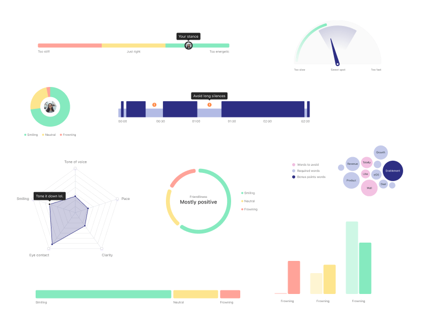

Q1 2023
PitchAI

Context
PitchIQ is a legacy Showpad Coach feature that allows salespeople to practice their sales pitches and receive feedback from their peers and managers.
PitchAI was introduced as an add-on to PitchIQ at the end of the first quarter of 2023 as Showpad's first true AI-driven feature.
Problem
As much value as PitchIQ offered to sales users, the high volume of submissions and the limited time of reviewers typically resulted in long delays in users receiving feedback on how they performed.
To shorten the time to get valuable insights and increase the users’ confidence in the pitches they're submitting for review, we looked into making use of our dataset of pitches and reviews to help sales users receive more timely feedback.
Using the Jobs to Be Done framework, we arrived at the following goal:
As a sales user practising my pitching, I want to be able to get immediate and valuable feedback in order to have more confidence in the practice pitches I submit for review.
Solution
With the company hoping to bring AI into the Showpad platform as soon as possible, we were left with a fairly tight deadline — the entire PitchAI project was to be researched, designed, implemented, tested, and delivered within one quarter.
Design before data
While discussions were still being held with the data team and engineering to assess feasibility, I started to get some design work done. From a UI perspective, there were a few things to figure out as well.
My first designs took on an agnostic approach to showcasing any metric — users should be able to identify it and understand how they performed relative to the ideal score for this particular metric. This approach proved to be the best for the project and part of the final UI was heavily informed by these early explorations.
Deciding what to track
In order to deliver on this project, we needed to understand which metrics we’d like to report on, which we’d be able to report on (and how reliably), and which would have the biggest impact on the final quality of the sales pitch.
We met with the data team to check the dataset available, arrange it by score, and try to extrapolate ranges for all the metrics we could track.
After doing some research, we had a good understanding of what we could track with the most confidence and what had the biggest impact on the quality of a pitch. In the end, and for this first release, we decided to track:
Fun fact: while looking at the data, we realised that the ideal ranges for some of the metrics varied with language. Long silences make for a bad pitch in German, but a good one in Portuguese.
A couple of design dead ends
Since design was happening simultaneously with discovery and research, a few assumptions had to be made that were later proven wrong. For example:
The possibility of needing explicit user consent and action to analyse their pitches led me to design the experience in a flyout UI that required a button press to action. In the end, the processing of our users’ pitches was confirmed to be covered by the T&C of our platform, making it possible for us to show the analysis inline and immediately after recording.
One of the first iterations showed a big pitch score. As we narrowed down the metrics tracked, we realised it wouldn’t be possible to review the pitch as a whole, since we were targeting only a few of its many comprising parts. The limited scope of the metrics analysed in this first pass meant we couldn’t confidently score the overall pitch, just these specific aspects of it
How to represent the users' performance
Even though we experimented with many different ways to represent and visualise the users' performance, the original design showcasing the score within a spectrum was found to be both easy to implement and understand.
It has some limitations — it doesn’t show the variation in performance across the length of the pitch, for instance, which is something I would have liked to have tackled on the first pass, but time constraints forced us to spend our time elsewhere.
How to make the report actionable
In addition to showing the users' score in any of the tracked metrics, we also wanted to make it easy for users to rerecord and improve their pitches with our feedback in mind. Initial feedback showed that even if people understood their scores, they weren’t always clear on how to improve them.
To address this, we added a banner with textual tips on how to achieve this in all the tracked metrics. The content of the banner reflects the score and performance of the user.
How to make sure users wait for the report
While the loading times were projected to be quick, there were some scenarios in which the report could take a few seconds to load. To ensure users affected by this would still benefit from this feature, we made the loader hint at the benefits of the report to hopefully encourage them to wait a bit longer for it to load.
We did this by referencing the metrics analysed, hoping to spike the users' curiosity.
Prototype
How to collect feedback
We used a Pendo Guide to prompt a feedback form after the pitch submission to collect feedback on how our users found this feature.
Data volume is still low at the time of writing, but the general sentiment is very positive.
Final design
Where to take PitchAI from here
While we're quite happy with the launch of PitchAI, there's a lot that was not included in the first release. We already have a lenghty list of improvements we'd like to make in further iterations.
Here are a few examples of what we'd like to do:
Expand on the reported metrics (e.g. track speech clarity and usage of recommended words).
Implement different ways to represent the users' scores visually, including score variation throughout the recording.
Show examples from peers to illustrate good practices for specific metrics.